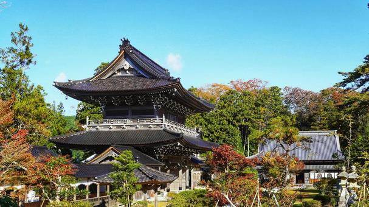

Learn zazen at a former head temple, eat in silence, work with your hands, and sit by the sea. End the day by lighting a candle you chose yourself.
Sojiji Soin was the head temple of the Soto school for almost 600 years. You learn the form of zazen and sit for thirty minutes. In the afternoon you carve a pattern into lacquer chopsticks at a craftsman’s shop, then pick a hand-made Japanese candle on Ipponsugi Street to light after dinner.
